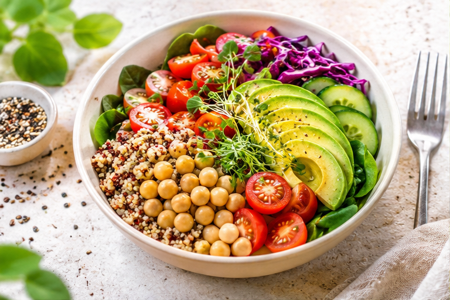

Start gently
Have a nourishing breakfast, drink water and give yourself time to get ready.
A practical guide to feeling good
A healthy lifestyle is built from simple choices: balanced meals, regular movement, enough rest and positive connections.
Explore healthy habits
Healthy living is not about following a perfect routine. It is about creating everyday patterns that support your body and mind. Start with realistic goals that fit your schedule, culture, budget and personal needs.
Try adding colourful foods to your plate, taking a walk, drinking water regularly and keeping a steady sleep routine. Small actions can become meaningful habits when you repeat them over time.
Remember that everyone's needs are different. For personal health concerns or major changes to diet and exercise, speak with a qualified healthcare professional.
A balanced day
There is no need to change everything at once. Pick one idea from each part of the day and make it your own.
Have a nourishing breakfast, drink water and give yourself time to get ready.
Walk, stretch, dance or do a favourite activity that suits your ability.
Take a break from busy tasks and follow a relaxing bedtime routine.